Режа:
1. Ўзгармас ток занжирлари.
2. Ўзгармас ток занжирларини ҳисоблаш усуллари
Инсон асосан иссиқлик энергиясидан
фойдаланади. Иссиқлик энергияси эса бирор
турдаги ёқилғи ёниши натижасида олинади.
Лекин ёқилғини ёқишдан аввал уни маълум
бир усул билан олиш (ҳосил килиш) керак,
сунгра уни табиий манбадан истеъмолчига
узатиш ва истеъмолчилар орасида тақсимлаш
зарур бўлади.
Агар тошкўмирни темир йўл орқали
ташилса, нефть ва газни эса трубо проводлар(қувурлар) орқали узатилса сув,
шамол ва атом энергиясини ташишни иложиси бўлмайди. Иссиқлик энергиясини узатиш (иссиқ сув, пар-буғ)
катта микиёсида
энергия йўқотилишига олиб келади.
Табиат энергиясини узатиш ва
истеъмолчилар орасида тақсимлаш фан
ва техника томонидан табиатнинг
бирламчи энергияларини
ўзгартиришнинг амалий методларини
ишлаб чиқилгандан кейингина мумкин
бўлди. Бунда бирламчи энергия - ёқилғи,
сув, шамол ва атом энергияси алоҳида
иккиламчи энергия туридаги энергияга,
яъни электр энергияга айлантирилди.
Бошқа турдаги энергиядан фарқли
равишда электр энергияси ўзининг
универсаллиги билан ажиралиб туради.
Бу энергияни механик, иссиқлик, нур ва
кимёвий энергиялардан осонлик билан
олиш мумкин ҳамда уларга осонлик
билан қайта айлантириш мумкин. Уни
минглаб километр масофага кам энергия
исрофисиз узатиш ва истеъмолчилар
орасида тақсимлаш мумкин.
Электр энергиясини бундай
афзалликлари уни кенг сохада
қўлланишига олиб келди.
Электр энергиясини асосий
истеъмолчилари
қуйидагилардан иборат:
• 1. Ишлаб чиқариш машиналари (электрюритма) ва
жихозларининг двигателлари - 60 %.
• 2. Модда таркиби ва шаклини ўзгартирувчи технологик
жараёнлар (электролиз, электрохимия, электросварка(электр
пайвандлаш), руда электромагнит сепарацияси, юқори частотали
қиздириб тоблаш) - 20 %.
• 3. Ёритиш системалари ва жихозлари - 9 %.
• 4. Электрлашган темир йўл ва шаҳар транспорти - 5 %.
• 5. Телевизорлар ва алоқа системаси (телефон,
телеграф, радио).
• 6. Аавтоматика, телемеханика ва кибернетика
қурилмалари.
• 7. Маиший истеъмолчилар (холодильник-совутгич,
дазмол, кир ювиш машинаси, электробритва ва х-зо).
• 8. Медицина аппаратлари (электрофизик даволаш
методлари учун, рентген, узи, узи ва х-зо).
Электр лампалари, киздириш курилмалари,
электролиз қурилмаси схемаларда R қаршилик
кўринишида белгиланади (1,а-расм). Двигател ва
аккумулятор батареалари заряд вақтида ток
йўналишига қарши ЭЮК га эга бўлади (тескари э.ю.к). Шунинг учун улар схемада ЭЮК га қарама-қарши
йўналишли ва ички қаршилиги R бўлган
манбаа кўринишида белгиланади (1,б-расм). ЭЮК га
эга бўлган занжир қисми актив, эга бўлмаган қисми
пассив қисм дейилади.
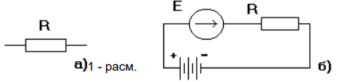
Ом қонуни. Немис физиги Георг Симон Ом
1827 йилда тажриба усули билан занжирда
ЭЮК ва ток кучи орасидаги боғланишни топди.
• Rо - манбаа ички қрашилиги (пластинкалар
орасидаги электролит қрашилиги, генератор
чулғами қрашилиги);
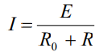
• R - истеъмолчи қрашилиги ;
• E - манбаа ЭЮК си;
• Занжирни бир қисми учун Ом қонуни:
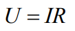
1 - қонуни: электр занжири бирор-бир
тугунга оқиб келаётган токлар
йиғиндиси шу тугундан оқиб кетаётган
токлар йиғиндисига тенг. Ёки исталган
тугун учун токларнинг алгебраик
йиғиндиси "0" га тенг:
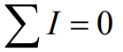
2 - қонуни: занжир берк контурида
ЭЮК ларнинг алгебраик йиғиндиси
ҳар бир қаршиликдаги кучланишлар
тушуви алгебраик йиғиндисига тенг:
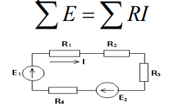
Кетма-кет улашда
қуйидаги муносабатлар
ўринли:
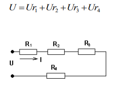
Параллель улашда
қуйидаги ифодаларга эга
бўламиз:
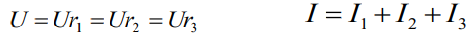
Аралаш улаш қоидалари
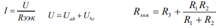
Икки манбали электр
занжирларини қўлланилиши.
• Бундай 2 манбали занжирлар автомобиль
қурилмаларида поезд, самалёт, комбайн ва
хоказоларда қўлланилади. Электр қурилмасида кенг
қўлланилади (1-расм).
• Бунда занжир 2 параллел уланган электр
манбаси(генератор ва аккумулятор батареяси ) ва
бошқа истеъмолчилар (ёритиш лампалари, сигнал
лампаси, ёндириш ғалтаги (катушка зажигания ва х-зо) дан иборат бўлади. Истеъмолчилар ҳам параллел
уланган бўлади:
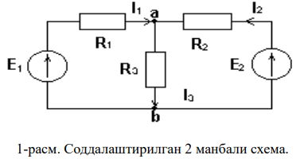
Одатда схема ҳамда Э.Ю.К. Е1, Е2, R1, R2, R3
қрашиликлар берилган бўлади. Шохобчалардаги I1,
I2 ва I3 токларни аниқлаш керак. Бу каби масалаларни
юқоридаги усуллардан фойдаланиб ечиш мумкин.
Бунда аввал тармоқ токлари
йўналишлари ихтиёрий танланиб, сўнгра
контур токлари йўналишлари
белгиланади. Тенгламалар сони
контурлар сонига тенг бўлади. Тузилган
тенгламалар системаси контур токларига
нисбатан ечилиб, сўнг тармоқ токлари
аниқланади.
Классик усул ( Кирхгоф
тенгламалари усули ).
• Бунда Кирхгоф қонунларига асосан
тенгламалар тузилади. Тенгламалар сони
номаълумлар сонига тенг бўлиши керак.
Занжирни ҳисоблаш тартиби қуйидагича олиб
борилади.
• а) Тармоқлардаги токлар йўналиши ихтиёрий
белгиланади, яъни контурлар танланади (2-
расм).
• б) Кирхгоф 1 қонуни бўйича (тугунлар учун)
тенгламалар тузилади. 1-расмда берилган схема
учун
• в) Кирхгоф 2 қонунига оид тенгламалар тузамиз.
(2)
• (1) ва (2) тенгламалар системаси I1, I2 ва I3
токларга нисбатан ечилади
Устлаш усули (суперпозиция,
метод наложения).
• Формулировкаси: исталган тармоқ (ветвь)
даги ток схемасидаги ҳар бир ЭЮК манбаи
вужудга келтираётган алоҳида олинган
токларнинг алгебраик йиғиндисига тенг.
• Бу усул ҳар қандай чизиқли электр
занжири учун қўлланилиши мумкин.
Занжирни бу усул билан ҳисоблаш
тартиби:
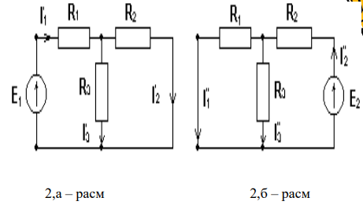
1-расмда кўрсатилган занжирда навбати
билан фақат 1 тадан ЭЮК манбаи
қолдириб, қолганини схемадан чиқарилади
(2-расм). Лекин схемадан чиқарилаётган
ЭЮК манбаларнинг ички қрашиликлари
схемада қолдирилади. Демак 1-расмда
кўрсатилган схема ўрнига энди 2 та схема
токларини (2-а,б расмлар) ҳисобланади.
Умумий ҳолда эса берилган схема ЭЮК
манбаси сонига қараб шунча схема
токлари ҳисобланади.
• Энди 2-расмдаги а ва б схемалар
эквивалент қаршиликлари топилиб Ом
қонуни бўйича токлар аниқланади.
Токларнинг хақиқий қийматлари эса
устлаб топилади.
• Бу методнинг афзаллиги шундаки, бунда
тенгламалар системаси ечилмайди
Тугун потенциаллари (кучланиш) усули.
1-расмда кўрсатилган схемани қайта чизамиз
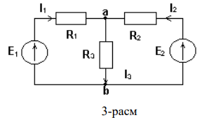
Бу усул кўпроқ электр занжири 2
тугунли бўлганда қўл келади. Схема
тармоқлари параллел (3-расм) уланган.
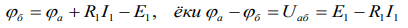
бу ерда Uаб - тугун кучланиши. (1) тенгламадан
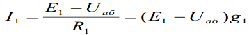
бу ерда g=1/R -тармоқ ўтказувчанлиги.
Худди шундай қилиб бошқа тармоқлар токларни
аниқлаши мумкин. Умумий ҳолда n-чи тармоқдаги ток
қуйидагига тенг бўлади:
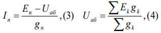
Назорат саволлари
• Энергия ўзи нима?
• Энергияни қандай турларини биласиз?
• Электр энергия деганда нимани тушунасиз?
• Энергияни узатиш нима учун керак?
• Энергия исрофи деганда нимани тушунасиз?
• Энергияни бир турдан бошқа турга айлантириш
нима учун керак?
• Электр энергиясининг қўлланиш сохаларини
айтинг?
• Ўзгармас ток занжирларини тушунтириб беринг?
• Электр схема нима?
• Резистор улашда қандай сохалар бор?